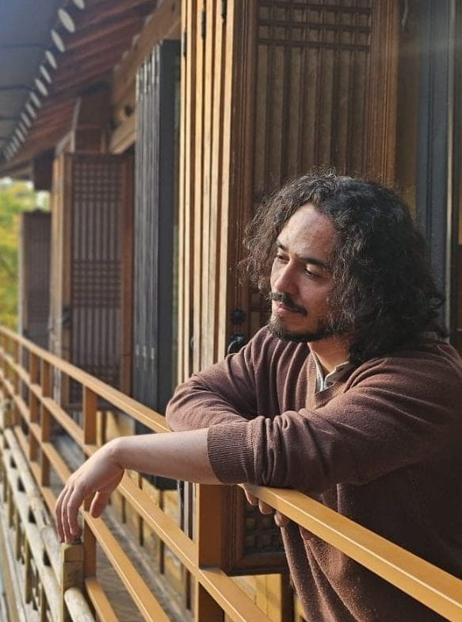

Global bifurcations
Invariant manifolds, homoclinic and heteroclinic structures, nonhyperbolic chaos and their role as organizing centres.
Mathematician · Dynamical Systems
Research Fellow at the Korea Institute for Advanced Study
I study how nonlinear systems change, organize and become chaotic—and how those ideas illuminate problems in physics, networks and scientific machine learning.
School of Computational Sciences · Seoul, Republic of Korea

My work connects the theory of dynamical systems with computational techniques and applications. I focus on qualitative changes in nonlinear models—ordinary and partial differential equations—especially those caused by intersections of stable and unstable manifolds associated with saddle equilibria and periodic solutions.
These global bifurcations organize periodic solutions, complex switching behavior and chaos. My research has led to collaborations with theoretical and experimental physicists working on photonic crystal nanocavities, optical fibres and other nonlinear optical systems, as well as investigations of ecological networks.

02
Invariant manifolds, homoclinic and heteroclinic structures, nonhyperbolic chaos and their role as organizing centres.
Travelling waves, master stability, nonlinear lattices, nonreciprocal coupling and pattern-forming instabilities.
Bose–Hubbard dimers, photonic nanocavities, symmetry breaking, multistability and switching dynamics.
Structure-preserving learning of nonlinear and chaotic systems, neural ODEs and data-driven dynamics.
03
Selected recent work
With Stefan Ruschel. Physical Review Letters 134, 257201 (2025).
Read the articleContact
Korea Institute for Advanced Study
85 Hoegi-ro, Dongdaemun-gu
Seoul, Republic of Korea